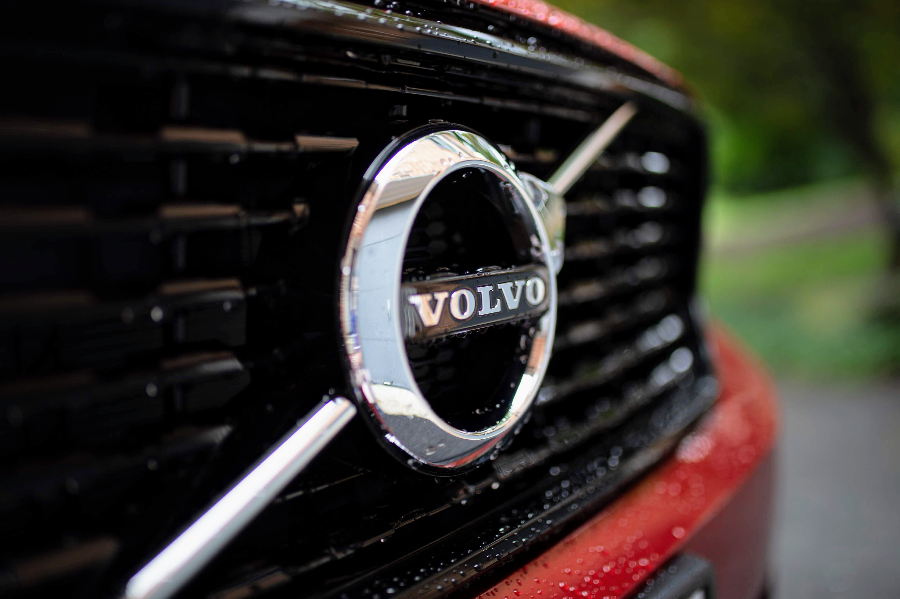

The Volvo XC40 is a subcompact luxury crossover SUV manufactured by Volvo Cars

The XC40 is the first Volvo to use the CMA platform, to be shared by future compact Volvos, Geely, and models of Lynk & Co. The platform was designed to maximise interior space.
The XC40 features front- and all-wheel-drive and comes powered by Volvo's 1.5-litre three cylinder and existing 2.0-litre four-cylinder engines, in both diesel and petrol variants. From 2019, a FWD plug-in hybrid named "T5 Twin Engine" is available, combining a 180PS petrol version of the 1.5 litre engine with an 74PS electric motor.
In the United States, engine choices are limited to the 2.0-litre four-cylinder petrol powered T4 and T5 models.
Volvo's Intellisafe is installed as standard. This technology is designed with the intention of preventing run off road accidents. By using the car's advanced sensory system, the technology can detect potentially fatal scenarios such as run off road protection. Safety belts are also capable of being automatically adjusted throughout these moments of impact while energy absorbing seat frames and seats are in place to prevent spine injuries. This technology was created based on real life data, and various crash test track methods such as: ditch, airborne and rough terrains.
The XC40 was launched in Canada at the 2018 Montreal Auto Show. The Volvo XC40 won the European Car of the Year award in 2018